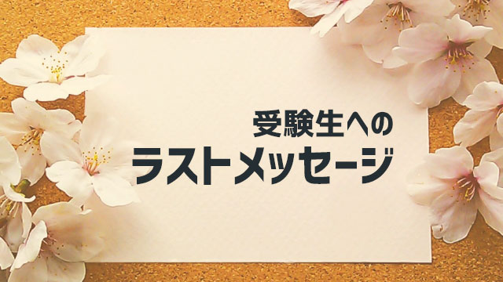

さて、いよいよ高校受験も最終局面を迎えました。多くの人はこれが第一志望なので今までとは違う緊張感を覚えているかも知れません。
大丈夫です。第一志望だからといって特別心がまえをつくろうとしなくても、実力さえ発揮できれば望みの結果が得られます。
平常心
これが大切。
受験といっても人生の1コマ、通過点に過ぎません。いたずらに心をたかぶらせることなくまた恐れたり不安がることもなく平常心で乗り切ってください。
今回は、皆さんへの最後のメッセージとして直前と本番での「心がまえ」について老婆心ながら、一言お話いたします。
平常心の保ち方
もう一度強調しますが、皆さんはすでに合格する実力をもっています。受験の成否は―受験に限らないが―力があるとかないとか、能力があるとか不足しているとかではなく、持っている力を発揮できるかどうか。そこにかかっています。
なので当日持てる力を十分に発揮した者が良い結果を出し、発揮できなかった者が良い結果を残せないということになります。
だからシンプルにこう考えましょう。
「実力が出れば受かる」
では、実力を出し切るにはどんな精神状態がふさわしいかといえば、先ほど言った「平常心」でいるということが大事。
そのために注意することは3つ。
- 前日までそれまでと変わらないリズムで過ごす
- 「自分は合格に値する」と自分に許可を出す
- 本番までの残り日数は、すでに使い古した教材で勉強する
1は説明の必要はありませんね。いつもと同じ勉強時間、就寝時間で特別なことはしなくてよいということ。2は、難しく考えずただ
「私（僕）は受かっちゃっていいんだよね」
と心の中で思うだけです。
何度も言いますが、受かる力はすでにあるのです。だから遠慮なく「受かってよい」のです。受かってよいと許可するだけです。自分に許可してあげてください。許可については前回の記事（高校受験生へのメッセージ2）を参考に。
3については時々「あ～ここまだ覚えてない。時間がない」などと慌てて新しい問題に取り組む人がいますが、それは焦っている証拠です。気を付けましょう。
全ての分野、全ての領域そしてあらゆる問題を解く必要などないのです。
「すべてを完璧に」という発想はいらないのです。完璧など目指す必要はまったくありません。そんな人はそもそもいません。
過去問なども隅から隅まで暗記するようにやる人がいますが、直前はやめたほうが良いでしょう。同じ問題など出るわけありませんから。
本番では「新しい問題」が出ます。だからむしろ白紙で臨むのがよいです。「毎年○○が出ているから今年も出そうだな」など予断をもって臨むことはマイナスになるので「どんな珍しい問題が出るのか楽しみだ」というくらいの気持ちでいましょう。
本番での心のあり方
さて、以下本番でのカンタンな心がまえについてお話します。
1. 校舎に挨拶する
これは冗談ではなくマジメに言っています。校内をくぐったらその瞬間、学校に対して「今日受験させていただきます。よろしくお願いします」と心の中で言いましょう。そして「ありがとうございます」とか「お世話になります」とつぶやいて入りましょう。
受かったら当然3年間お世話になる学校です。あいさつは当たり前です。気持ちも落ち着きます。ぜひやってみてください。
ちなみに、あいさつは心の中でつぶやくだけです。おじぎしたり声に出す必要はありません。（やっても良いけど）
2. 自分の精神状態に気づく
塾の先生をやっていたころ、生徒を応援するために校門に立ったものですが面白いことに「先生、ぜんぜん緊張しないんです」と言ってくる人がいました。逆に「やべっ、すっごいドキドキする」という人や「先生～どうしよう、カゼひいて熱っぽい」とダルそうに訴える人など様々な生徒がいました。
結論から言うと、緊張していようがしていまいが、熱があるがなかろうが全く関係ありません。というか私の経験では発熱して別室受験した子はすべて合格しました。
どちらかというと「緊張してないです」という人のほうが不安というか不自然な感じでした。（緊張しないとダメという意味ではない）
本番で全然緊張しないのは一見、平常心を保っているようですが中には「緊張しているのを感じ取れないほど緊張している」つまり平常心を失っている人もいるからです。
なので正直に自分はいまどんな状態なのか自分に問うてみましょう。少しの間、目をつぶって「今どんな感じ？」「何感じてる？」と聞いてみてください。「少し緊張している」「大丈夫、ぜんぜん平気」など心の声が答えてくれるかもしれません。
そしてその声が聞こえたら（聞こえなくてもかまいません）「そうなんだ…」と答えてください。緊張しているなら、そうなんだと緊張している自分に気づいてあげる。平気なら平気なんだなと認めてあげる。ただそれだけで不自然な心の「かたより」が消えます。
これまた何度も言いますが、緊張しないとダメではないし緊張したらダメでもなく、そういう表面的な自覚に隠れた本当の自分の状態に気づきましょうということです。
本番ですから誰でも緊張するのは普通だし、逆に緊張しない肝っ玉の太い人もいるでしょう。体調がイマイチという人もいます。どちらも合否と直接関係ありません。
ただ、実力を発揮するうえでは極度の緊張や「よ～しガンバるぞ」といった力みはあまりないほうが良く、冷静な落ち着きと「ふだんの実力が出せれば良い」という自分への信頼を感じているほうがいいと思います。
答案には人柄がにじみ出る
次です。
3. 答案には心をこめてこたえる
これはとても重要です。今日のメッセージの最大のポイントです。
「心をこめて書く」
入試問題は皆さんに対する「問いという形をとった手紙である」と言えます。とても大事な人からの手紙と考えてみてください。（メールと考えてもよいが手紙と呼びたい）
皆さんは自分の大切に思う人から、長い手紙が来て返信するときどういう思いで書きますか？ぞんざいな字、読みにくい文章、汚い文字で書くことは絶対ありえませんよね？
一生懸命心をこめて書くのではないですか？
（メールだから字なんて書かないよというツッコミはやめてください）
実は私は若い頃高校の教師でした。入試の採点をやった経験もあります。
何百枚も採点していると、最初の数行を読んだだけで「この子は受かる」「あ～この子はダメだな」とわかってしまうのです。
それと内容を読む前に全体の文字をサーっと読んでも、理解しているかそうでないかが直観的にわかるのです。何よりも誠意のない答案かどうか一目瞭然でわかる！
受かる子の答案はだいたい共通していて、まず丁寧な字。そしてダラダラしていなくてシンプル（明快・簡潔）なのが特徴でした。
ダメなのは、乱雑な文字で中でも殴り書きのように汚い字を書く者。我々がガマンして（笑）よーく読んでもたいていは失格でした。
最悪は薄い字です。
薄く小さい字で何が書いてあるかわからない字。これは、採点者泣かせで二重の意味でマイナスです。
一つは、文字通り薄くて判別しにくいこと。採点者も制限時間の中で作業する以上この判別しにくいのは致命的に不利です。
二つ目は、わざと薄く書いてあわよくば○にしてもらおうという魂胆が見えること。
自信がないのでわざとハッキリした字を書かず、採点者が間違って×を○にしないかと期待しているのではないかと、不快になります。
採点者も人間なのです。やはり心を込めて明快に書くことが大切。
キレイな字、上手な字でなくても良いのです。
きちんと丁寧に「分かっていること」を明快に書きましょう。
字だけではありません。少し細かい話ですが選択問題などで「次の（ア）～（カ）の中から正解を３つ書き出せ」などという問いがあります。
これも「イエオ」などのように順番で書いてください。
時々「エイオ」などとランダムに並べる人がいますが、採点者が誤って×にすることがあります。注意しましょう。
要するに「採点者の立場に立って答える」
ということが肝心です。
その上で前回の記事にも書きましたが
「自分の分かっていることを素直に表現する」
ことを心がけましょう。
答案を読むだけで、出来不出来だけでなくその人の「人柄までわかる」のです。
「得点しよう」というより「自分と言う人間をわかってもらう。自分をさらけ出す」という思いが大事。
だからこそ心をこめて書くのです。
それはきっと相手に伝わるのです。
そして心をこめると実力も発揮しやすくなります。経験者の私が言うのだから本当です。
以上のことを心を留めて本番に臨んでください。
皆さんが実力を出し切れることを心底から望んでいます。最後まで決してあきらめず終了のベルが鳴るまで粘り続けてください。
最後にもう一度繰り返します。
「皆さんは合格に値する人間です」
これを自分にも許可してください。